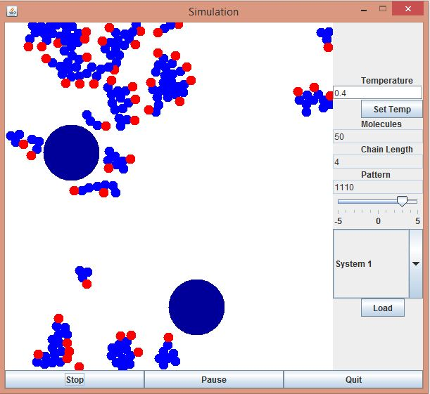

A little regarding me
Read MoreWhen considering what to write in a biography it is important to consider what potential viewers could easily prove false. For instance saying “I am a mighty lion gazing proudly over my domain” can easily be disproved by noting that I am actually human. However if I were to claim that “I feel like a mighty lion surveying my glorious kingdom” no one could say that I do not in fact experience these emotions. Having said that, let us dive into a tale of adventure, excitement and bold-faced lies.
I was born in Germany, a country famed for great discoveries and music (as well as a particular kind of pickled cabbage). The very earliest years of my life were spent in Berlin and a little town on the outskirts of the capital city. After being presented to my first rival for inheritance (my younger brother Johan) my family moved to Raleigh, North Carolina in the mighty USA. I began my education here at AB Combs Elementary however this part of my academic career was only to last till the second grade.
In 2002 I realised that the fight for whatever my parents left behind would be a larger struggle than initially anticipated. My sister was born this year and turned the rivalry between two brothers into a full on three state power struggle. Of course we were all still too young to appreciate this and as such lovingly played with one another as only siblings can. Then in 2003 we moved back to Germany and my primary school life continued there. It was only 3 years before we moved again. However this time we couldn’t afford a plane and had to settle for a ferry from the Netherlands to England.
Unsatisfied by what we found in England we journeyed northwards until we finally came to rest on the outskirts of Edinburgh, Scotland. Here I ended the life of a primary school student and moved on into the esteemed life of high school. Balerno Community High School harboured me for 6 wonderful years and upon completion I had apparently collected enough qualifications to move on to the next stage of life: University.
The decision to study Computer Science was not a hard one, I had always been fascinated by the wonders of the digital universe and had been coding since I started high school. Fortunately I had one of the best universities in the world for this type of degree right at my doorstep. I accepted the offer of The University of Edinburgh and am currently in my third year!
Skills
A few of the languages I speak
Python
Hiss hiss here comes the snake
Java
I am also profecient in the island of Fiji
C++
Like C, but more plusses
C
ABDEFGHIJKLMNOPQRSTUVWXYZ
The Full List
- Python,
- Java,
- C++,
- C,
- Haskell,
- Mathematica,
- Prolog
Additonally I am fluent in German and English as well as having experience in HTML, XML and SQL
FEATURED PROJECTS
Some projects made either by myself or as part of a collaboration of people
-

Particle Interaction Simulation (JAVA)
Pretty, pretty bubbles. Doesn't that look wonderful? Well... Till it explodes anyway.
-
![This chat bot emulates a user on Telegram based on their facebook data. The data is then analysed and responses are given to messages in Telegram by using Markov chains to predict how the subject would usually react to a message like this. This project was made as part of a team at StacsHack 2015 and as such was not developed for a long time. As a result of this many improvements could be made. For example one could automate the retrival of data from Facebook or use longer Markov chains for even better responses.](img/portfolio/item2.jpg)
uAI (Python)
Ever wanted to replace yourself on Telegram? Well now you can! (Y'know... As long as you manually install your facebook data)
-
![Worth Watching is a web-app made by a group of students (myself included) for HackMIT. The idea behind this website is to predict whether upcoming movies will be 'Worth Watching'. This is done by training a neural network using Microsoft Azure's machine learning utilities on the IMDb data and pre-release tweets about the movie. Specifically the tweets were fed through sentiment analysis using IBM's Alchemy API and then this data was used in the machine learning. Finally the tweets of the upcoming movie would also be put through analysis and that (along with other data about the upcoming film like director and lead actors) is fed to the network. The output is a score out of 10 representing the certainty of the algorithm that a film will be 'Worth Watching'](img/portfolio/item3.jpg)
Worth Watching (Python)
Too lazy to scroll through social media to see if you should go see a movie? Then we have the app for you!
-
Wow
Is this not a great picture of a bench?
-
An Image
Its like there was nothing to go here
-
Smart City Bike Hire (JAVA)
Can't afford to hire your own software engineers to design a system for city-wide bike hire? No problem! (Except it is because for legal reasons we're not allowed to publish the code)
{kind=link}
{kind=link}
{kind=link}
{kind=link}